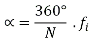
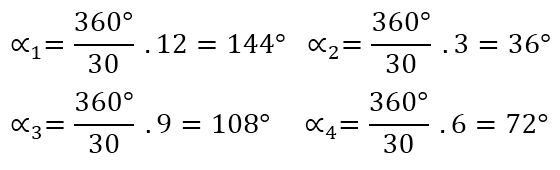
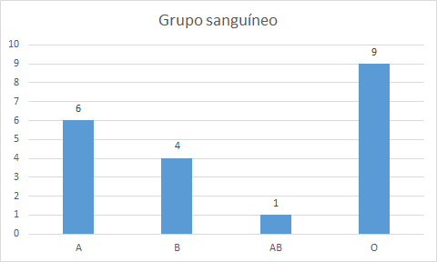

Gráficos estadisticos
Un gráfico o representación gráfica es un tipo de representación de datos, generalmente numéricos, mediante recursos gráficos (líneas, vectores, superficies o símbolos), para que se manifieste visualmente la relación matemática o correlación estadística que guardan entre sí
Tipos de gráficas


Diagrama circular o Diagrama de pastel
Un diagrama de sectores se puede utilizar para todo tipo de variables, pero se usa frecuentemente para las variables cualitativas.Los datos se representan en un círculo, de modo que el ángulo de cada sector es proporcional a la frecuencia absoluta correspondiente.
El diagrama circular se construye con la ayuda de un transportador de ángulos.
Ejemplo:
En una clase de 30 alumnos, 12 juegan a baloncesto, 3 practican la natación, 4 juegan al fútbol y el resto no practica ningún deporte.
Aplicando la formula anterior podemos calular los ángulos para cada caso:
| Alumnos | Ángulo | |
|---|---|---|
| Baloncesto | 12 | 144° |
| Natación | 3 | 36° |
| Fútbol | 9 | 108° |
| Sin deporte | 6 | 72° |
| Total | 30 | 360° |
Diagrama de barras
Un diagrama de barras se utiliza para de presentar datos cualitativos o datos cuantitativos de tipo discreto.
Se representan sobre unos ejes de coordenadas, en el eje de abscisas se colocan los valores de la variable, y sobre el eje de ordenadas las frecuencias absolutas o relativas o acumuladas.
Los datos se representan mediante barras de una altura proporcional a la frecuencia.
Ejemplo
Un estudio hecho al conjunto de los 20 alumnos de una clase para determinar su grupo sanguíneo ha dado el siguiente resultado
Tabla de frecuencias
| Grupo sanguíneo | fi |
|---|---|
| A | 6 |
| B | 4 |
| AB | 1 |
| 0 | 9 |
| 20 |
Gráfico resultante
